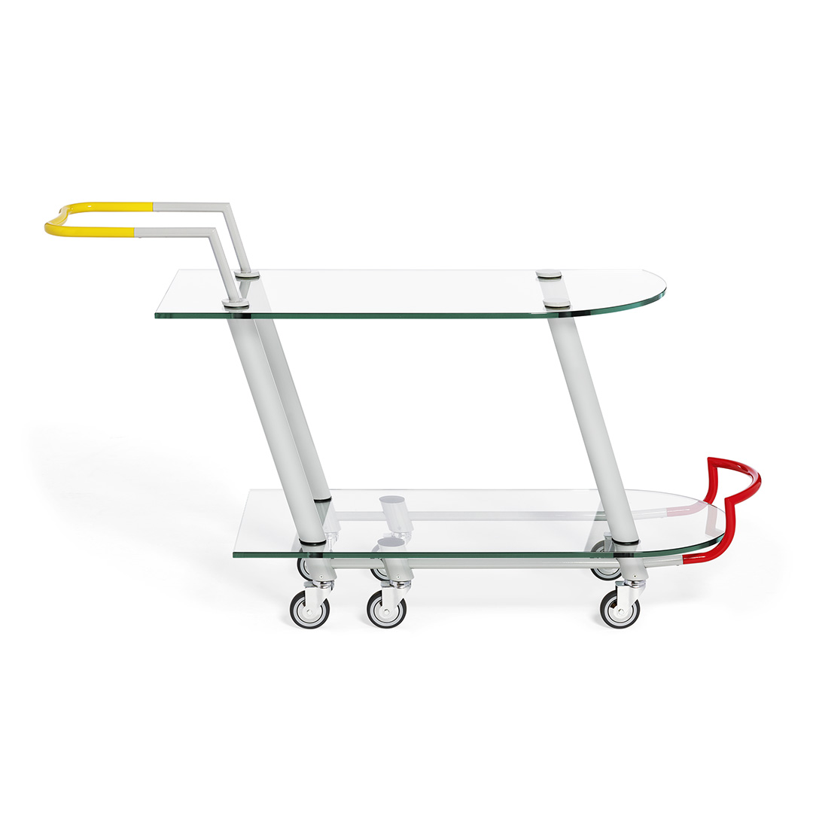
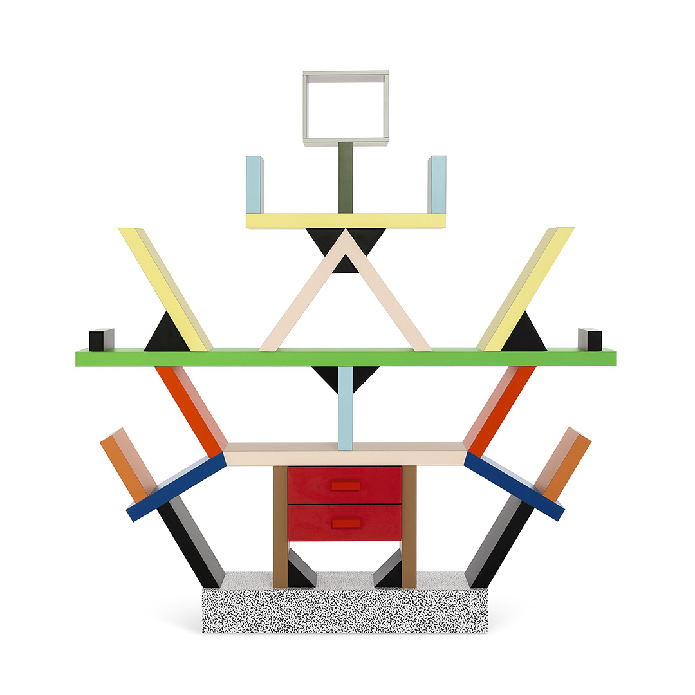
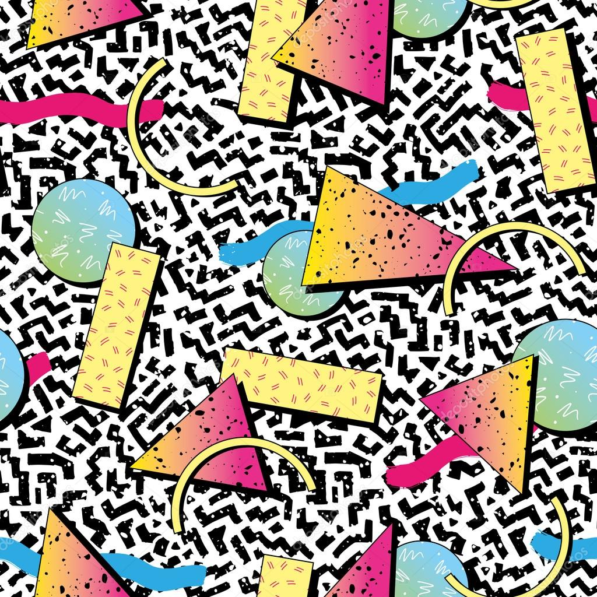

Memphis is een speelse en expressieve designbeweging uit de jaren tachtig. Ze valt meteen op door haar felle kleuren, eenvoudige geometrische vormen en patronen die opzettelijk aanwezig en sterk contrasterend zijn. De ontwerpen lijken soms overdreven en bijna speels, maar juist dat maakte de beweging vernieuwend binnen de destijds strakke en sobere ontwerpwereld.
De beweging ontstond in 1981 in Italië. Ontwerper Ettore Sottsass bracht een groep ontwerpers samen die vonden dat vormgeving te ernstig en te technisch was geworden. Tijdens hun eerste bijeenkomst speelde voortdurend het nummer “Stuck Inside of Mobile with the Memphis Blues Again” van Bob Dylan. De naam “Memphis” werd bijna toevallig gekozen, maar staat vandaag symbool voor kleur, durf en vrijheid in design.
Ontstaan van een nieuwe vormentaal
Memphis was een bewuste reactie tegen soberheid en strenge ontwerpnormen. De leden wilden tonen dat een stoel niet alleen functioneel hoeft te zijn, maar ook sculpturaal en vrolijk. Een lamp mocht doen denken aan speelgoed, een kast mocht opgebouwd zijn uit losse blokken zonder klassieke symmetrie.
Volgens de ontwerpers werd design te vaak geassocieerd met luxe og status, terwijl plezier, verbeelding en persoonlijke expressie onderbelicht bleven. Memphis bracht kleur waar stilte heerste en patronen waar gladde oppervlakken verwacht werden.

Typische kenmerken
Memphis herken je meteen aan felle kleurcontrasten, grafische patronen zoals zigzag, strepen en stippen, en aan eenvoudige vormen zoals cirkel, driehoek en rechthoek. Objecten lijken soms op kleine architecturen of bouwspellen. Ook de materialen vallen op: gelamineerd hout, kunststof en oppervlakken met prints die eerder aan speelgoed herinneren dan aan luxe.
Invloed op ontwerp en beeldcultuur
Hoewel Memphis soms chaotisch of overvol kan overkomen, had de beweging een grote invloed op latere vormgeving. Ze bewees dat ontwerp niet enkel rationeel hoeft te zijn, maar ook emotioneel en speels. Memphis vervaagde de grens tussen kunst, mode en popcultuur en bracht visuele vrijheid terug in het interieur.
Vandaag zien we opnieuw referenties aan Memphis in interieurs, grafische posters, digitale interfaces en modecollecties. Kleuren zijn opnieuw minder terughoudend en vormen worden onbevangen gecombineerd.

Memphis en grafische vormgeving
Voor grafische ontwerpers is Memphis inspirerend omdat de vormentaal helder en direct is. Grote kleurvlakken staan naast sterke lijnen en geometrische figuren die ritme en energie suggereren. Deze visuele intensiteit kan krachtig werken, maar vraagt ook om controle.
Te veel patronen of kleurvlakken kunnen rust verstoren en leesbaarheid beïnvloeden. Wie in Memphis-stijl ontwerpt, moet zorgvuldig bepalen waar het oog tot rust komt en waar spanning wordt opgebouwd.
Memphis design toont dat vormgeving niet vast hoeft te zitten aan conventies van functionaliteit of minimalisme. De beweging opende deuren naar ontwerpen die durven verrassen en provoceren, maar die tegelijk luchtigheid en spel toelaten. Daardoor blijft Memphis, ook vandaag, een blijvende bron van inspiratie voor ontwerpers die kleur, vorm en durf willen combineren.
